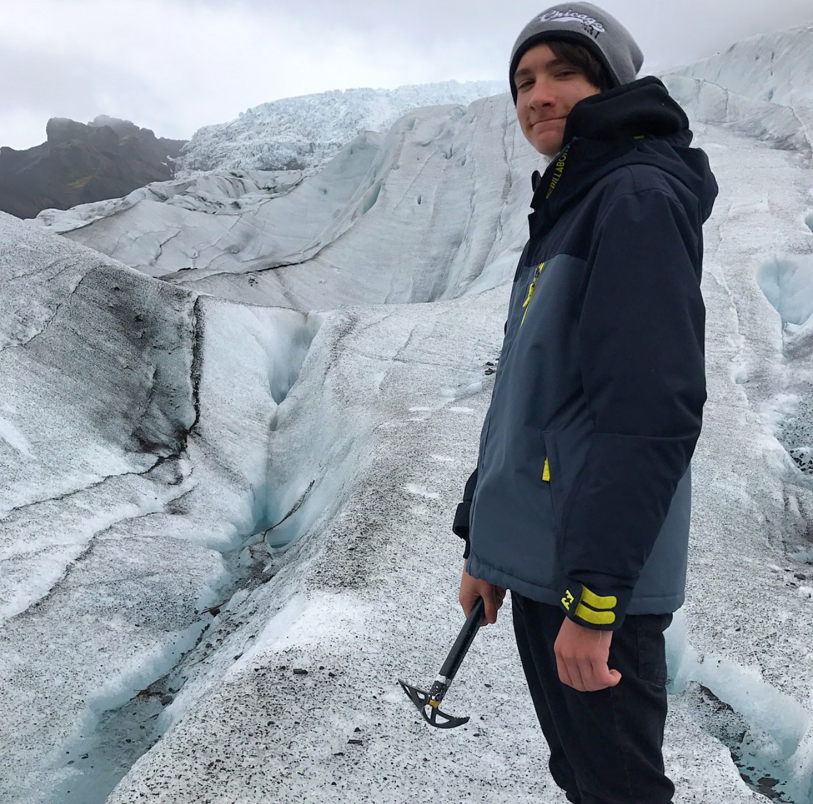
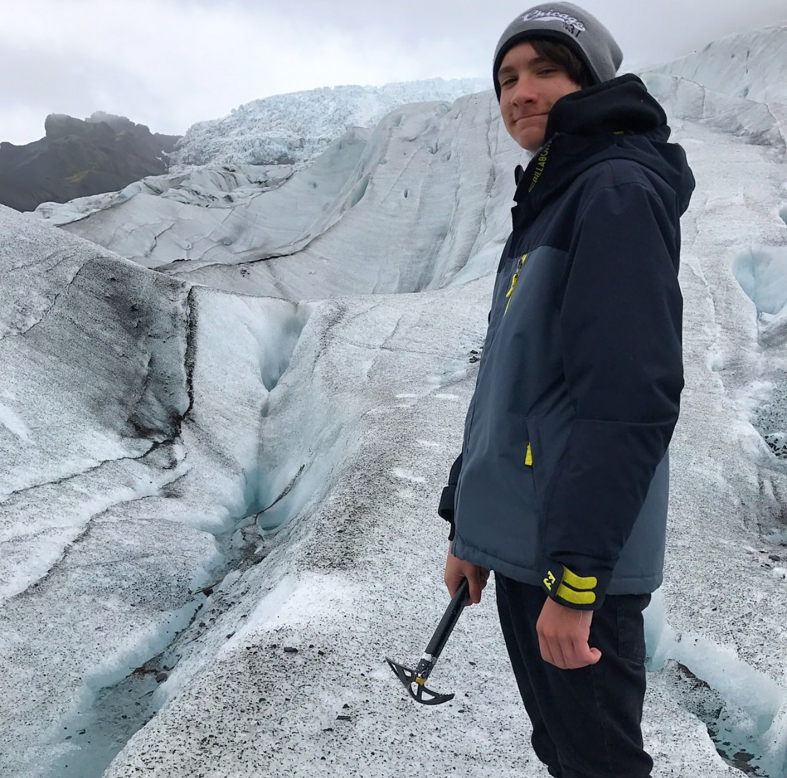

While my hike in El Yunque was my most recent one, it was not my most challenging one. I did my most challenging hike in the Grand Canyon last Spring Break. While the trail was only about 7 miles round-trip, it included about 2,000 feet in elevation change going down, and then another 2,000 back up again. This is easily my favorite hike that I've done as it was fairly challenging but extremely rewarding with the views that it offered. In my travels over the years, I have also gone on some challenging, but also cool, hikes in Iceland and Alaska. These were all particularly interesting since they each offered something unique which I had not done before. In Sveitarfélagið Hornafjörður, Iceland, my hike included partially climbing a glacier. This was super cool, as hiking on a glacier was something I thought I would never do! My hike in Alaska was cool since I got to see a lot of wildlife! Specifically, I got to see moose and bald eagles.
While my hiking journey seems to be fairly primitive compared to some other people I know, it is something that I want to get even more in to! Additionally, I would very much like to get in to climbing as well. Ideally, at some point in my life I would like to try to climb one of the seven summits of the world (though, probably not Everest). Below, I've included a photo of my glacier hike in Iceland and a photo of a bald eagle that I took in Alaska.
 
